Darbo drabužiai ir įranga Naudotojo vadovas
Programa registruoja darbuotojams išduotus darbo drabužius ir apsaugos priemones. Paruošiate užsakymą ir pažymite jį kaip užsakytą. Gavęs prekes, darbuotojas patvirtina gavimą, o programa išsaugo užrakintą įrašą anglų ir rusų kalbomis. Ji taip pat registruoja įmonės SIM, įrangą ir baldus bei tai, pas ką yra kiekvienas daiktas.
1Prisijungimas
- Atidarykite workwear.gavort.nl ir prisijunkite savo el. paštu ir slaptažodžiu.
- Pirmasis ekranas priklauso nuo jūsų rolės:
- administratoriai pradeda ekrane Programos – visos jų rolių atveriamos programos; darbo drabužių programa atsidaro ekrane Suvestinė;
- vadovai – ekrane Programos; darbo drabužių programa atsidaro ekrane Vadovo suvestinė;
- darbuotojo rolė – ekrane Darbuotojo suvestinė.
Šoninėje juostoje yra visi skyriai ir Ieškoti… (⌘K). Užsakymai, Prekių katalogas ir Prekių rinkiniai išvardyti po Darbo drabužiai. Pasirinkę Darbo drabužiai, juos paslėpsite arba parodysite; kol jie paslėpti, rodomas patvirtinimo laukiančių užsakymų skaičius. Pagalba, Spartieji klavišai, jūsų paskyra ir Atsijungti yra jos apačioje.
Kiekviename ekrane viršutinė juosta su ekrano pavadinimu ir mygtukais slenkant lieka matoma. Joje esantis ⋯ turi rečiau naudojamus ekrano veiksmus, o telefone – ir netilpusius mygtukus.
Pažymėjus Likti prisijungus, šiame įrenginyje liekate prisijungę ir uždarę programėlę ar perkrovę įrenginį – iki 30 dienų arba kol jo nenaudojate 14 dienų. Bendrame kompiuteryje varnelę nuimkite: būsite atjungti uždarius naršyklę ir ne vėliau kaip po 12 valandų.
Atsijungti užbaigia prisijungimą šiame įrenginyje. Pakeitus slaptažodį, kiti jūsų įrenginiai atjungiami. Jei administratorius atkuria jūsų slaptažodį ar išjungia paskyrą, esate atjungiami visur.
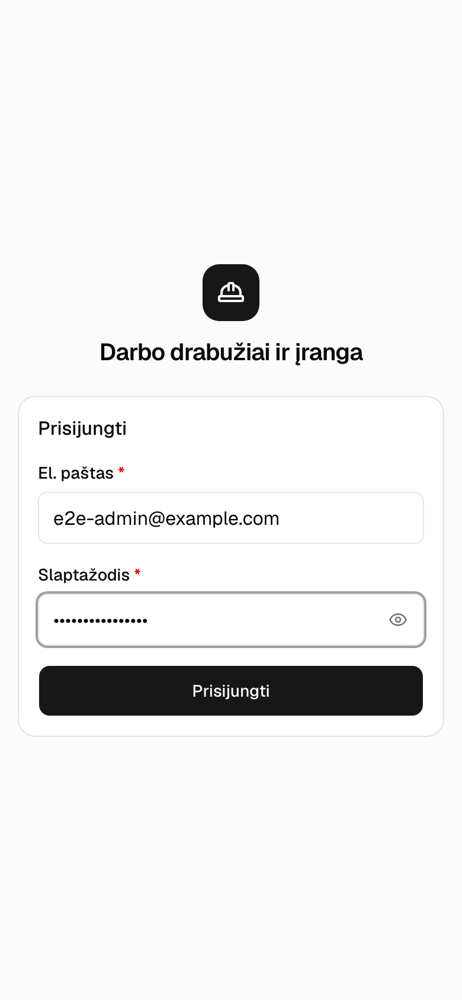
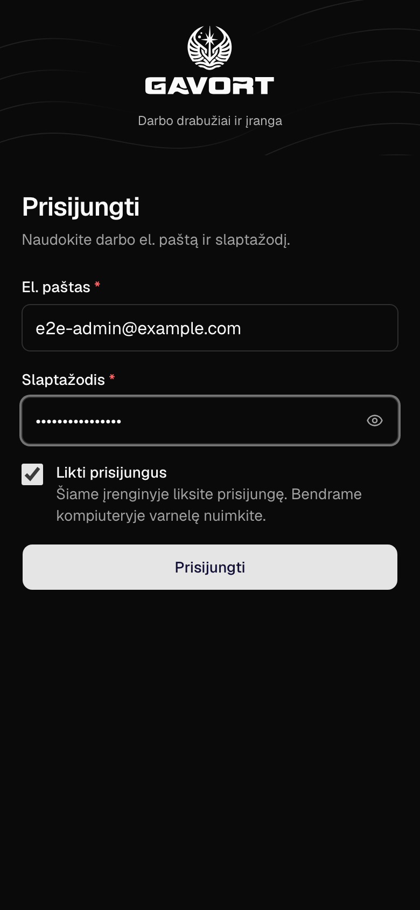
2Programų sąrašas
Tik administratoriams ir vadovams
Programos rodo visas jūsų rolių atveriamas programas didelėmis plytelėmis, grupėmis: Darbo drabužiai ir AAP, Įmonės turtas, Žmonės ir brigados ir Administravimas. Kai kurios plytelės atveria vieną programos ekraną, pvz., Kurti užsakymą ar SIM kortelės. Jei turite daugiau nei vieną programą, prisijungę pradedate čia.
Kad grįžtumėte, pasirinkite Programos šoninės juostos apačioje – ir darbo drabužių programoje, ir Administravime – arba suraskite Programų sąrašas su ⌘K.
Programoje „Skenuoti SIM“ tai tinklelio piktograma viršuje.
Rašykite į Ieškoti programų ir ekranų, kad liktų plytelės su tuo pavadinimu ar grupe; Enter atveria pirmąją. Plytelė atveria savo programą čia pat. Plytelė su ↗ – kita svetainė su savu prisijungimu, pvz., PPE Crew; ji atsidaro naujame skirtuke. Ženklelis ant plytelės nurodo jos etapą, pvz., Bandoma.
Grupės kairėje rodo po vieną grupę arba jūsų Prisegtos plyteles. ⌘K arba / perkelia žymeklį į paiešką.
⋯ ant plytelės parodo, kur ji veikia, ir jos adresą, su Atidaryti ir Prisegti. Prisegtos plytelės rodomos pirmos, skiltyje Prisegtos, kiekviename įrenginyje, kuriame prisijungiate; Atsegti pašalina. Skiltyje Neseniai atidarytos – programos, kurias paskutines atidarėte šiame įrenginyje.
Programos ⋯ dar turi Atsiliepimas: praneškite jos komandai, kaip sekėsi – Veikia gerai, Neaišku ar Kažkas sugedo – ir ką bandėte padaryti. Administratoriai juos skaito skiltyje Programų tvarkymas.
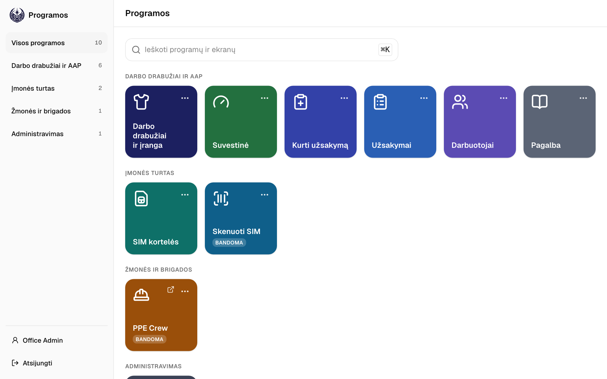
Dar bandomos programos, Prototipas ir Kuriama, rodomos tik turintiems rolę Bandytojai, kai jie įjungia Rodyti bandomas programas.
Kai kurios programos, pvz., „Skenuoti SIM“, turi versijas. Stabili – ta, kuria naudojasi visi; bandytojams, kol bandoma nauja versija, gali būti siūlomos ir Beta bei Peržiūra. Kai programa jums turi daugiau nei stabilią versiją, jos ⋯ turi Versijos: pasirinkite vieną, ir programa jums nuo tol atsidarys joje, net iš žymės ar kitos programos nuorodos, o plytelė tai parodys. Programos viršuje juosta rašo Naudojate: Beta ir versiją; ten galite perjungti versiją arba pasirinkti Grįžti į stabilią.
Jei prisegtų programų ar pasirinktos versijos išsaugoti nepavyksta, programų sąrašas grąžina viską kaip buvo ir tai praneša: Nepavyko išsaugoti prisegtų programų. Po akimirkos bandykite dar kartą.
3Suvestinė
Tik administratoriams
Viršuje rodomi patvirtinimo laukiantys užsakymai, šio mėnesio išlaidos ir artėjantys pakeitimai.
Reikia jūsų dėmesio rodo, ką daryti toliau, pradedant skubiausiais darbais. Kiekvienoje eilutėje yra jos užduoties mygtukas:
- pavėluota prekė – Užsakyti vėl;
- nepatvirtintas užsakymas – Siųsti nuorodą;
- trūkstamas dydis – Pridėti dydžius;
- prekė be kainos – Taisyti.
Kortelė Atsarginės kopijos rodo, ar duomenų bazė kopijuojama. Pasirinkite ją, kad Administravime atidarytumėte Atsarginės kopijos.
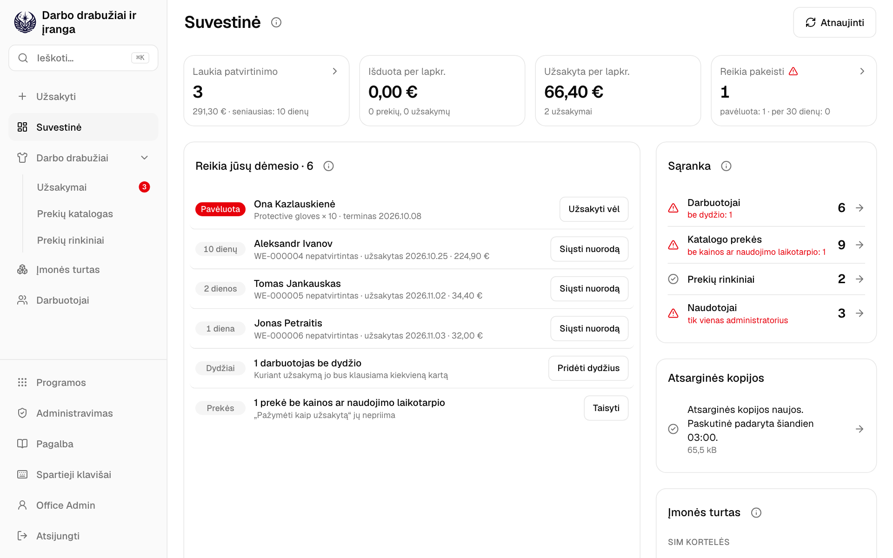
Tik vadovams
Vadovo suvestinė skirta prekėms, kainoms ir pirkimams: kas užsakyta, išlaidos pagal prekes, kokius pakeitimus teks pirkti, naujausi kainų pokyčiai, kas kataloge ir rinkiniuose trukdo užsakyti, ir kokių dydžių laikyti atsargų.
Tik darbuotojo rolei
Darbuotojo suvestinė prasideda nuo to, ką reikia padaryti: jūsų užsakymai, dar laukiantys darbuotojo patvirtinimo (Siųsti nuorodą), keistinos prekės ir darbuotojai, kuriems trūksta dydžio. Žemiau – jūsų užsakymai pagal mėnesius ir neseniai išduoti.
Jei turite daugiau nei vieną rolę, Suvestinės viršuje perjungia jūsų suvestines.
4Užsakymo kūrimas
- Skyriuje Užsakymai viršuje pasirinkite Kurti užsakymą.
- Lauke Kam skirta įveskite darbuotojo vardo dalį. Naujam darbuotojui pasirinkite + Naujas darbuotojas.
- Pridėkite prekes:
- Prekių rinkinys vienu paspaudimu prideda visą komplektą.
- Pridėti prekę prideda vieną prekę. Paspaudę /, pereisite į šį lauką.
- Patikrinkite kiekvienos eilutės dydį ir kiekį:
- Dydžiai imami iš darbuotojo išsaugotų dydžių. Drabužių dydis renkamas raide, pvz., S (44–46).
- Kol nepasirinkti visi trūkstami dydžiai, užsakyti negalima.
- Jei pasirinksite kitą dydį nei išsaugotas darbuotojo, programa paklaus Pasirinktas kitas dydis. Išsaugoti jį darbuotojo profilyje? Išsaugoti – dydis bus naudojamas ir būsimiems užsakymams; Praleisti dydžio atnaujinimą – tik šiam užsakymui.
- Dešinėje esančiame skydelyje pasirinkite Peržiūrėti ir pažymėti kaip užsakytą arba paspauskite ⌘/Ctrl Enter.
Kol dirbate, šis įrenginys saugo užsakymo juodraštį; ⋯ → Išvalyti užsakymą… viršuje jį ištrina, prieš tai paklausęs. Kopijuoti į WhatsApp (žinutė tiekėjui) yra peržiūroje.
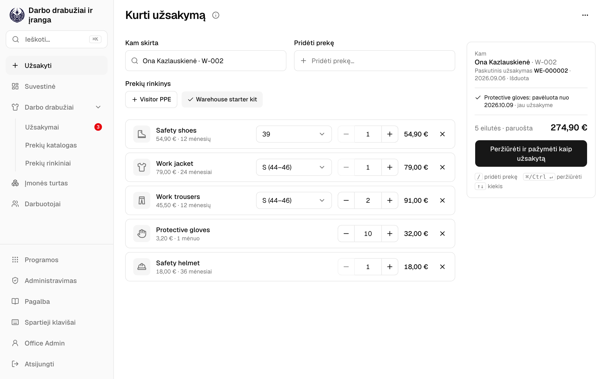
5Peržiūra ir „Pažymėti kaip užsakytą“
- Patikrinkite eilutes ir bendrą sumą.
- Pasirinkite Pažymėti kaip užsakytą. Užsakymo būsena tampa Užsakyta, ir jo nebegalima keisti. Programa kartu sukuria darbuotojo patvirtinimo nuorodą.
- Nusiųskite darbuotojui nuorodą: Siųsti nuorodą per WhatsApp arba Kopijuoti nuorodą. Nuoroda galioja 7 dienas ir rodoma tik vieną kartą.
Jei darbuotojas pasirašys popieriuje, vietoj to pasirinkite Spausdinti įrašą.
Kopijuoti į WhatsApp peržiūroje nukopijuoja žinutę tiekėjui. Kai administratorius Administravime, ekrane Nustatymai, yra nurodęs tiekėjo WhatsApp grupę, programa pasiūlo ją atidaryti: įklijuokite žinutę ten.
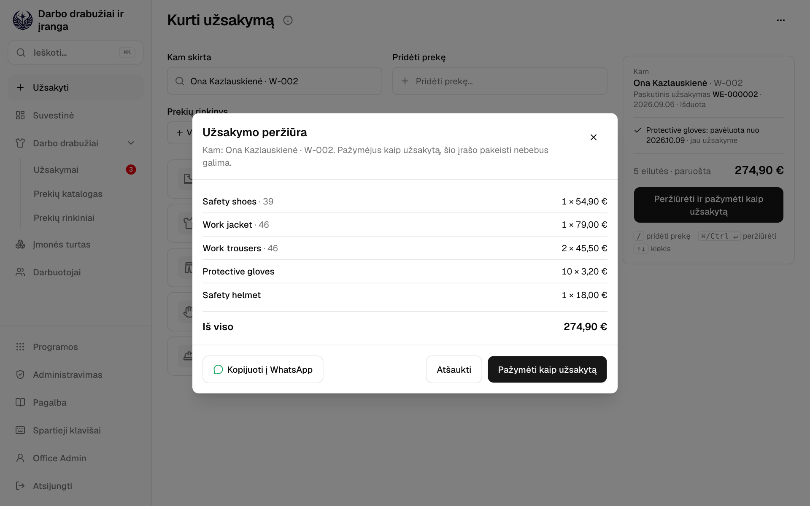
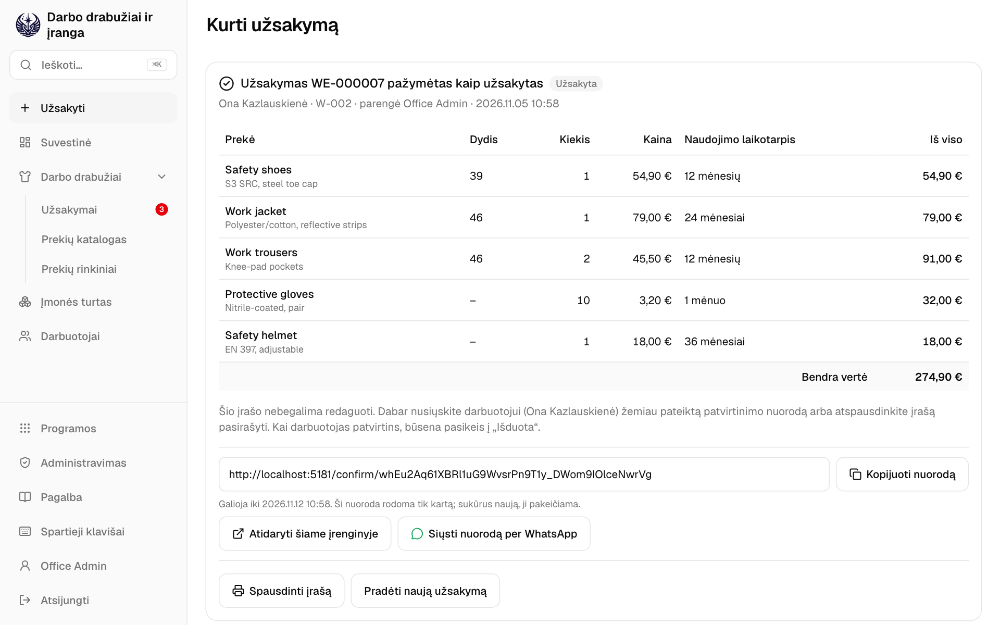
6Darbuotojas patvirtina
- Darbuotojas atidaro nuorodą. Paskyros jam nereikia.
- Jis peržiūri prekes, jų kainas ir bendrą sumą anglų arba rusų kalba (EN / RU). Puslapis atsidaro darbuotojo pageidaujama kalba, jei tai anglų ar rusų; lietuviškai jis nerodomas.
- Jis pažymi sutikimą ir paspaudžia Confirm receipt (Подтвердить получение). Užsakymo būsena tampa Išduota.
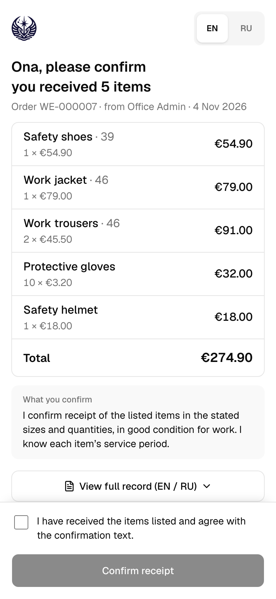
7Užsakymai
Užsakymuose – visi pateikti užsakymai. Kurti užsakymą viršuje pradeda naują; telefone – Užsakyti apatinėje juostoje.
Visi, Užsakyta ir Išduota filtruoja užsakymus pagal būseną; užvedę žymeklį ant vieno, matysite, ką jis skaičiuoja. Taip pat galima filtruoti pagal darbuotoją ir datą. Spustelėjus įrašo numerį, užsakymas atsidaro šalia sąrašo. J ir K pereina tarp užsakymų, o Esc užsakymą uždaro.
Data iš pradžių rodo Visos datos; vietoj to galite pasirinkti Paskutinės 7 dienos, Šis mėnuo arba Praėjęs mėnuo. Pasirinktas laikotarpis… jo vietoje atveria Nuo ir Iki: Taikyti padaro tą laikotarpį rodomu pasirinkimu, pavyzdžiui, 2026.09.01 – 2026.09.30, o Atšaukti palieka filtrą kaip buvo. Norėdami jį pakeisti, vėl pasirinkite Pasirinktas laikotarpis….
Kiekvienas datos laukas, čia ir kitur, priima datą taip, kaip ją rašo jūsų kalba: 2026.10.15. Rinkite skaitmenis, o skyrikliai atsiras patys. Tuščiame lauke, vos pradėjus rinkti, pirmiausia įrašomi einamieji metai; jei reikia kitų, įrašykite juos ant viršaus. Arba pasirinkite kalendorių šalia lauko ir pažymėkite dieną: dienos, kurių pasirinkti negalima, pavyzdžiui, Iki anksčiau nei Nuo, yra pilkos. Neegzistuojanti data atmetama, ir Taikyti laukia, kol ji bus ištaisyta.
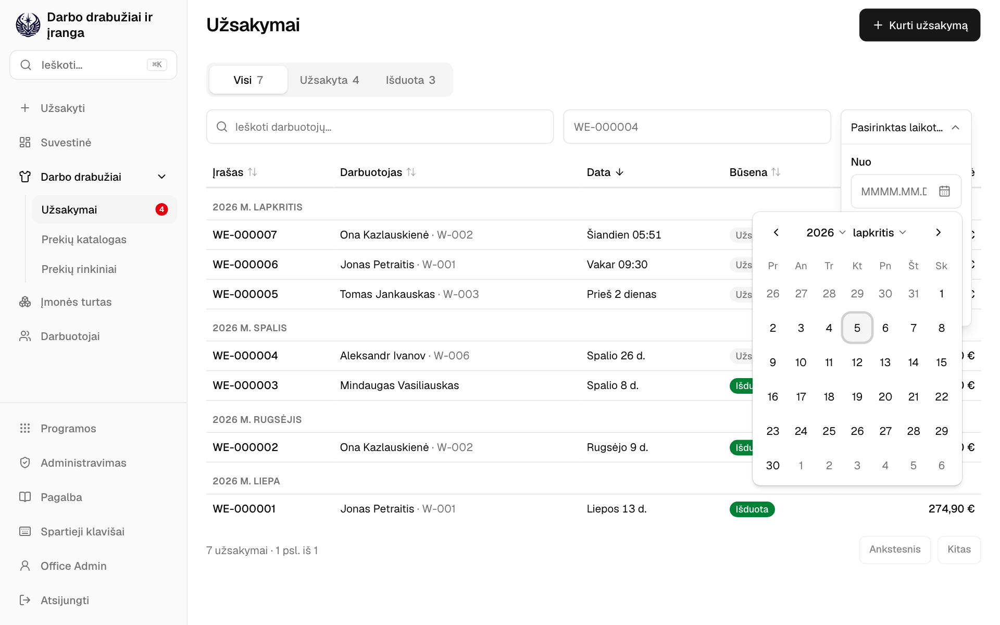
Užsakymas, kurio būsena Užsakyta, turi šiuos veiksmus:
- Sukurti patvirtinimo nuorodą sukuria naują nuorodą darbuotojui ir parodo ją žemiau su Kopijuoti nuorodą ir Siųsti nuorodą per WhatsApp. Tada mygtukas tampa Patvirtinimo nuoroda – juo nuorodą galima paslėpti ir vėl parodyti. Išėjus iš užsakymo nuoroda neberodoma; nauja nuoroda pakeičia senąją.
- Spausdinti užsakymą atspausdina užsakymo įrašą, kurį darbuotojas pasirašo.
- Pažymėti kaip pasirašytą ir išduotą pažymi, kad darbuotojas pasirašė atspausdintą įrašą. Programa pirma paklausia; tada užsakymas tampa Išduota, o šalia būsenos atsiranda žalias ženkliukas Pasirašyta.
Tik vadovams
⋯ → Ištrinti užsakymą… pašalina užsakymą, pvz., bandomąjį. Prieš tai programa paklausia.
Užsakymo Pakeitimai rodo, kas jam nutiko ir kas tai padarė: užsakyta, sukurta ar atidaryta nuoroda, išduota. Iš pradžių jie suskleisti; pasirinkite Pakeitimai, kad juos atidarytumėte.
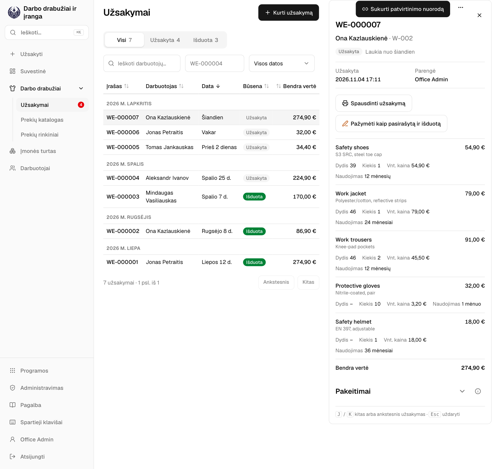
8Išdavimo įrašas
Užsakymas, kurio būsena Išduota, turi užrakintą įrašą anglų ir rusų kalbomis (Items Given Record / Акт выдачи). Atidarykite jį mygtuku Peržiūrėti užsakymą.
- Spausdinti įrašą atspausdina jį viename A4 lape; užsakyme tą patį daro Spausdinti užsakymą.
- Siųsti per WhatsApp jį išsiunčia.
Datos įraše ir Įmonės turto atspausdintuose bei PDF išdavimo aktuose rašomos 2026 10 15, visomis kalbomis vienodai.
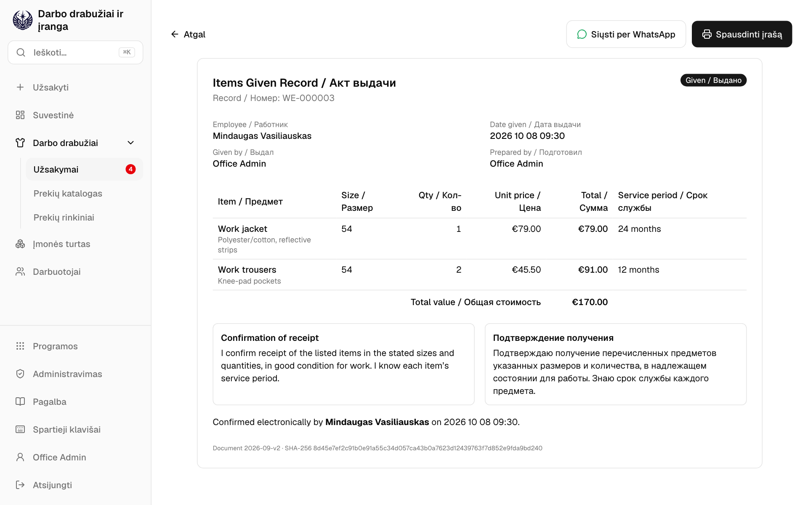
9Darbuotojai
Sąraše matyti kiekvieno darbuotojo dydžiai ir pastabos. Darbuotojai, kuriems trūksta dydžio, pažymėti. Ilga pastaba sutrumpinama iki vienos eilutės; visą ją matysite užvedę žymeklį arba atidarę darbuotoją. Kai kuriam nors trūksta dydžio, Visi ir Trūksta dydžio virš sąrašo pasirenka, kas rodoma; užvedę žymeklį ant vieno, matysite, ką jis rodo.
Darbuotojo puslapyje rodoma:
- Dydžiai ir Pageidaujama kalba, kiekvienas su savo mygtuku Redaguoti;
- Išduotos prekės: visos išduotos prekės su naudojimo trukme ir pakeitimo data;
- Užsakyta, dar neišduota: dar neišduoti užsakymai;
- įmonės turtas, kurį jis turi ir turėjo: Išduotos SIM ir Įranga;
- Pakeitimai: kas ir kada keitė jo duomenis ar dydžius.
Skiltys po dydžiais iš pradžių suskleistos, o jų pavadinimuose nurodyta, kiek jose įrašų; pasirinkite pavadinimą, kad skiltį atidarytumėte ar suskleistumėte.
Redaguoti prie Dydžiai paverčia dydžius laukais tiesiog čia: Išsaugoti išsaugo juos būsimiems užsakymams, Atšaukti palieka, kaip buvo. Raudonas Trūksta atidaro to dydžio lauką. Pageidaujama kalba keičiama taip pat. Naujas užsakymas pradeda užsakymą šiam darbuotojui.
Tik administratoriams ir vadovams
Darbuotojo, kuris dar turi įmonės turto, ištrinti negalima: išėjus iš darbo, niekas negrąžinama savaime. Pirmiausia užregistruokite grąžinimą.
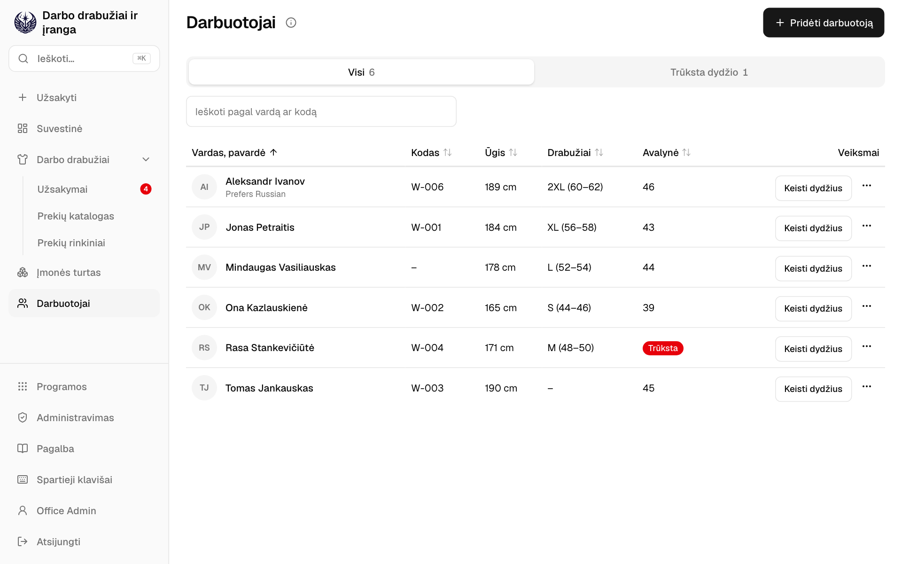
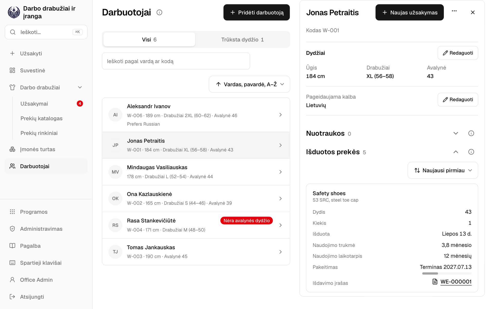
10Prekių katalogas ir prekių rinkiniai
Kiekviena katalogo prekė turi kainą, naudojimo laikotarpį ir dydžių grupę. Užsakymuose rodoma ir sumuojama ši kaina. Prekės be kainos ar naudojimo laikotarpio užsakyti negalima. Pakeitus kainą, esami užsakymai nesikeičia.
Prekė gali turėti ir Pirkimo kainą – kiek mokame tiekėjui. Ji neprivaloma, užsakyti jos nereikia, o užsakymuose ji nerodoma. Atidarytoje prekėje matyti abi kainos ir kaip jos keitėsi, o jos Pakeitimai, iš pradžių suskleisti, rodo, kas ir kada keitė prekę.
Spustelėjus prekę, ji atsidaro šalia sąrašo. J ir K pereina tarp prekių, o Esc prekę uždaro. Prekė be kainos ar naudojimo laikotarpio pažymėta Neužpildyta; užvedę žymeklį ant žymos, matysite, ko trūksta.
Prekių rinkinys – tai prekių komplektas su numatytais kiekiais. Ekrane „Kurti užsakymą“ jį pritaikote vienu paspaudimu.
Tik administratoriams ir vadovams
Prekes kuriate ir keičiate ekrane Prekių katalogas, o komplektus – ekrane Prekių rinkiniai.
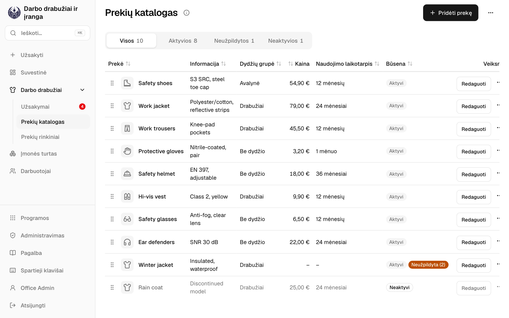
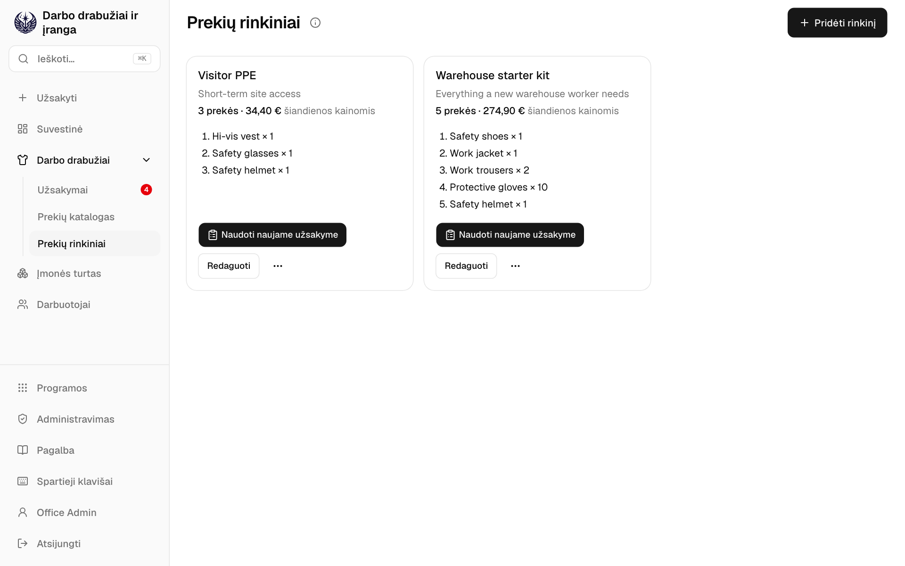
11Įmonės turtas
Skyriuje Įmonės turtas registruojamos darbuotojams išduodamos įmonės SIM, įranga ir baldai: kur kiekvienas daiktas yra, pas ką jis ir koks aktas pasirašytas jį išduodant. Jame yra du ekranai: SIM kortelės ir Įranga, kurioje registruojama ir įranga, ir baldai; ją mato tik tie, kam suteikta rolė Įrangos išdavimai. Kiekvienas daiktas – atskiras įrašas su savo inventoriaus numeriu, todėl trys vienodi nešiojamieji kompiuteriai yra trys turto vienetai.
Jį atidarysite šoninėje juostoje arba paspaudę G, tada A. Jei matote ir Įranga, ji ir SIM kortelės išvardytos po Įmonės turtas: pasirinkite vieną, kad atidarytumėte. Pasirinkę Įmonės turtas, jas paslėpsite arba parodysite.
Tik administratoriams ir vadovams
Kortelėje Įmonės turtas suvestinėje rodomi tie patys skaičiai. Pasirinkite vieną, kad atidarytumėte tą ekraną jo skirtuke.
Skirtukai virš sąrašo skaičiuoja SIM: Visos, Biure ir Pas darbuotojus. Ekrane Įranga dar yra Negrąžinta; jo skaičiai persidengia, nes negrąžintas daiktas vis dar yra pas darbuotoją. Ieškokite pagal numerį ar darbuotoją, filtruokite pagal vietą, tiekėją ir dokumentus, o įrangą – pagal kategoriją. Pasirinkta SIM ar daiktas atsidaro šalia sąrašo, o siauresniame ekrane – jo vietoje.
SIM Būsena – tai, ką patvirtina tiekėjas: Neaktyvuota, Aktyvi arba Užblokuota. Ji nepriklauso nuo to, kur kortelė yra ir pas ką ji: užblokuota kortelė negrąžinama, o grąžinus kortelę jos būsena nesikeičia.
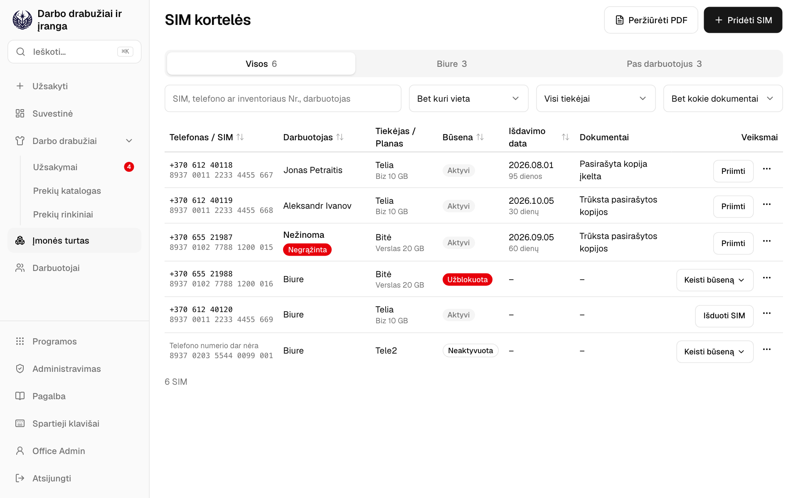
Mygtukas Peržiūrėti PDF ekrane SIM kortelės (telefone – po ⋯) parodo sąrašą kaip PDF spausdinti: visas SIM, kurias palieka skirtukai, paieška ir filtrai, ne tik pirmą puslapį, sąrašo tvarka. Kiekviename puslapyje nurodytas sąrašas, spausdinimo data ir laikas, filtrai ir tvarka. Jis būna ta kalba, kuri pasirinkta jūsų paskyroje, o datos rašomos 2026 10 15. Peržiūroje Spausdinti jį atspausdina, Atsisiųsti PDF išsaugo, o Atidaryti naujame skirtuke atidaro jūsų naršyklės peržiūros programoje. Jei naršyklė PDF programoje parodyti negali, kaip daugelyje telefonų, ji siūlo du paskutinius.
Tik administratoriams ir vadovams
Pridėti SIM užregistruoja kortelę, kai ją atsiunčia tiekėjas. Jos SIM Nr., tiekėjas ir inventoriaus numeris (pasiūlomas kitas) reikalingi iš karto; telefono numeris, planas ir negrąžinimo vertė gali palaukti, kol kortelė bus išduodama. Tiekėjas pasirenkamas iš sąrašo, kurį administratorius tvarko Administravime, ekrane Nustatymai; numatytasis jau pasirinktas. Kol sąrašas tuščias, tiekėją įrašote patys. Ten nustatyta negrąžinimo vertė įrašoma iš anksto; ją galite pakeisti arba ištrinti. Ekrane Įranga mygtukas Pridėti turtą užregistruoja vieną daiktą: jo pavadinimą ir kategoriją, pagal kurią pasiūlomas numeris, pavyzdžiui, PC-000003.
Keisti būseną įrašo tiekėjo patvirtintą būseną. Kortelės ji neaktyvuoja ir neužblokuoja: dėl to rašykite tiekėjui.
SIM ar daiktas išduodamas trimis žingsniais lange Išduoti SIM arba Išduoti turtą:
- Atidarykite jį ir pasirinkite Išduoti SIM arba Išduoti turtą. Darbuotojo puslapyje tas pats mygtukas prie skilties Išduotos SIM arba Įranga pradeda nuo darbuotojo ir parodo, kas yra biure.
- Kam ir kada: pasirinkite darbuotoją ir išdavimo datą, šiandien arba anksčiau. SIM planas neprivalomas; negrąžinimo vertė yra akte, todėl ji reikalinga.
- Atspausdinkite aktą ir duokite pasirašyti: Spausdinti aktą išspausdina išdavimo aktą iš šio puslapio, neatidarydamas naujo skirtuko, o Atsisiųsti PDF išsaugo tą patį aktą failu. Duokite darbuotojui pasirašyti popierinį aktą, tada pažymėkite Darbuotojas pasirašė atspausdintą aktą.
- Perduokite SIM arba Perduokite daiktą: pasirinkite Išduoti SIM arba Išduoti turtą. Tai iš karto įrašo turėtoją, vietą ir pasirašytą aktą.
Kiekvienas žingsnis atsiveria, kai baigtas ankstesnis, o eilutė prie mygtuko nurodo, kas liko. Išspausdinus aktą, darbuotojas ir data sutraukiami į vieną eilutę; Keisti juos vėl atveria. Išduoti galima tik Aktyvią kortelę, esančią biure ir turinčią telefono numerį. Jei po spausdinimo aktas pasikeičia, žymė nuimama: atspausdinkite jį dar kartą ir duokite pasirašyti. Jei po spausdinimo langas uždaromas ar puslapis įkeliamas iš naujo, „Išduoti SIM“ vėl atsidaro su įvestais duomenimis ir atspausdintu aktu. Baldai ir kiti daiktai išduodami be akto, dviem žingsniais.
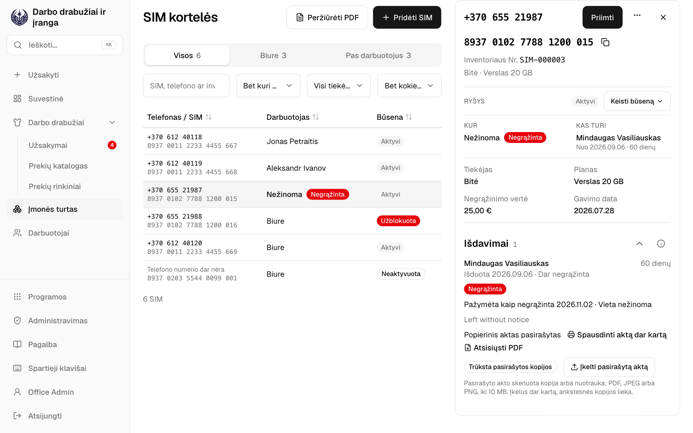
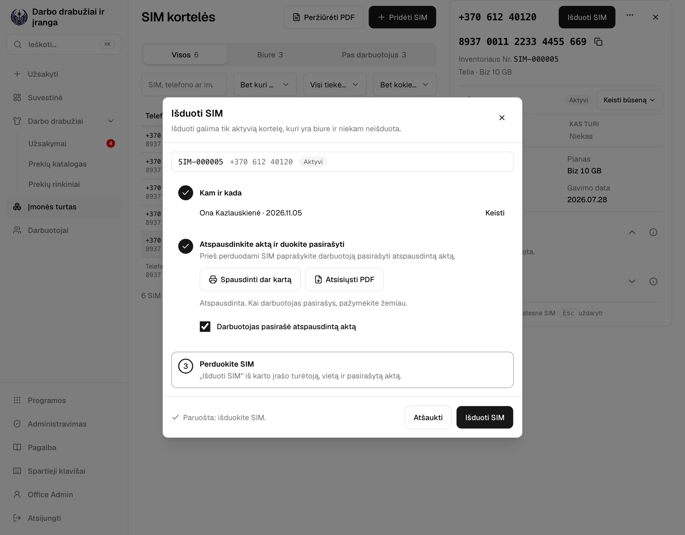
Tik darbuotojo rolei
Išdavimo su aktu kortelės puslapyje rašoma Pasirašyta kopija įkelta, su skenuota kopija atsisiųsti, arba Trūksta pasirašytos kopijos. Filtras Dokumentai randa trūkstamas.
Tik administratoriams ir vadovams
Kai darbuotojas pasirašo, nuskenuokite arba nufotografuokite aktą ir po jo išdavimu pasirinkite Įkelti pasirašytą aktą: PDF, JPEG arba PNG failą iki 10 MB. Iš nuotraukos pašalinama fotografavimo vieta ir fotoaparato duomenys. Įkėlus dar kartą, ankstesnės kopijos lieka po naujausia.
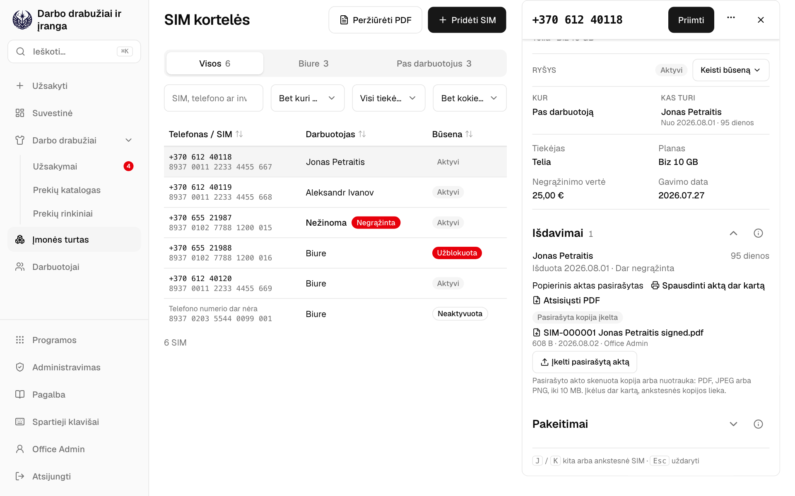
Tik administratoriams ir vadovams
Kai daiktas fiziškai grįžta į biurą, Registruoti SIM grąžinimą arba Registruoti turto grąžinimą jį ten įrašo. Kiekvienas išdavimas ir grąžinimas lieka jo puslapyje skiltyje Išdavimai, o Spausdinti aktą dar kartą ir Atsisiųsti PDF pateikia jo aktą. Spausdinimas, kiekvienas atsisiųstas PDF ir blokavimo laiškas įrašomi skiltyje Pakeitimai. Iš pradžių ji suskleista; pasirinkite Pakeitimai, kad ją atidarytumėte.
Išėjus iš darbo, niekas negrąžinama savaime. Kai darbuotojas negrąžina kortelės, Pažymėti kaip negrąžintą įrašo, kur ji yra: vis dar pas jį ar nežinoma. Kortelė lieka jo, kol grįš. Tada Paruošti blokavimo laišką pateikia tekstą, kurį nukopijuosite į savo laišką tiekėjui; kai jis patvirtins, ekrane Keisti būseną pasirinkite Užblokuota.
Paieška randa SIM pagal SIM, telefono ar inventoriaus numerį, o daiktą – pagal inventoriaus numerį.
12Skenuoti SIM
Tik administratoriams ir vadovams
Skenuoti SIM prideda naujai gautas SIM iš jų kortelių: SIM Nr. nuskaitomas iš brūkšninio kodo priekyje, PIN ir PUK – iš nugarėlės. Tai atskira, dar bandoma programa tiems, kurie tvarko įmonės turtą: atidarykite ją iš Programos. SIM kortelės viršuje grąžina į darbo drabužių programą.
Visoms SIM rodo, kas kortelėms bendra: tiekėjas, planas ir negrąžinimo vertė iš Nustatymai, gavimo data ir pastaba. Pieštukas šalia keičia juos tik šiai siuntai.
Nufotografuokite abi puses: SIM Nr. nuotrauka, tada PIN ir PUK nuotrauka. Kai SIM Nr., PIN ir PUK užpildyti, SIM patenka į sąrašą ir pradedama kita. Jei skaitmuo nuskaitytas klaidingai, pataisykite jį, tada pasirinkite Kita SIM. Taip pat galite skenuoti Kamera kortelę po kortelės arba Pasirinkti nuotraukas, padarytas anksčiau.
Sąrašas apačioje patikrina visas SIM iš karto ir nurodo, ką taisyti: numeris nėra SIM Nr., nesutampa paskutinis skaitmuo, ta pati SIM du kartus arba ji jau yra SIM kortelės. Pašalinkite taisytiną SIM ir nuskenuokite ją dar kartą. Pridėti 2 SIM prideda visas iš karto, Neaktyvuota, biure; kol bent vieną reikia taisyti, nepridedama nieko. Vienoje siuntoje telpa ne daugiau kaip 100 SIM: likusios praleidžiamos, ir sąrašas tai praneša.
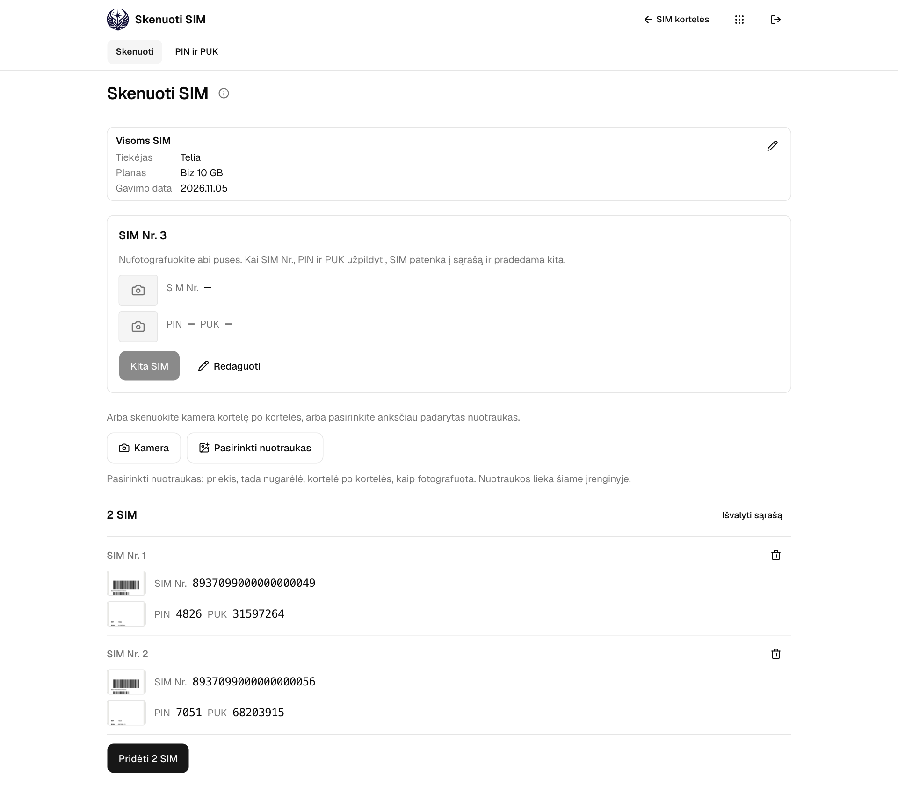
Tik administratoriams
PIN ir PUK viršuje randa SIM pagal SIM Nr. arba telefono numerį, bent 4 skaitmenis. Rodyti PIN ir PUK juos parodo, paprašęs slaptažodžio, jei jį įvedėte seniau; kiekvienas kartas įrašomas į Audito žurnalas. SIM be jų turi Pridėti PIN ir PUK. Jie saugomi užšifruoti ir niekada nerodomi sąraše ar Pakeitimai. Parodyti kodai vėl paslepiami po minutės arba išėjus iš skirtuko. Skenuojamos SIM lieka savo sąraše, kol čia ieškote kurios nors.
13Administravimas
Tik administratoriams
Administravime tvarkote, kas gali naudotis programėle ir ką gali daryti, prižiūrite, kaip ji veikia, ir tvarkote organizacijos nustatymus. Jis atsidaro Apžvalgoje. Kiti jo ekranai: Naudotojai, Rolės ir teisės, Audito žurnalas, Sauga, Sistema, Naudojimas, Nustatymai, Laiškų šablonai ir Programų tvarkymas.
Atidarykite jį mygtuku Administravimas šoninės juostos apačioje. Jis turi savo šoninę juostą; Darbo drabužiai ir įranga jos apačioje grąžina atgal.
Prisijungiate prie abiejų iš karto, o Atsijungti bet kuriame atjungia nuo abiejų. Administravimą mato visi, kurių rolės leidžia tvarkyti naudotojus, roles ar nustatymus arba skaityti audito žurnalą, saugą, sistemą, naudojimą ar atsargines kopijas, su tik tais ekranais, kuriuos atveria jų rolės.
14Apžvalga
Tik administratoriams
Apžvalga atsako į klausimą: ar kas nors negerai? Reikia dėmesio išvardija, į ką pažiūrėti, svarbiausia pirmiau, su nuoroda, kur tai sutvarkyti. Kai viskas gerai, rodoma Niekam nereikia jūsų dėmesio.
- Atsarginė kopija nepavyko arba kopijos nebedaromos.
- Buvo panaudotas nukopijuotas prisijungimas arba daug prisijungimų nepavyko.
- Užklausos nepavyksta arba atsirado nauja klaidos rūšis.
- Laikas peržiūrėti prieigą. Peržiūrėkite ją kas 90 dienų.
- Audito žurnalas nesutampa su savo antspaudais: kažkas jį pakeitė apeidamas programėlę.
- Antspaudams nesuteikiamos laiko žymos: laiko žymų tarnyba neatsako jau parą.
Žemiau esantys Rodikliai rodo aktyvius naudotojus, kas prisijungę dabar, šiandienos prisijungimus, paskutinių 24 valandų užklausas, duomenų bazę ir paskutinę atsarginę kopiją.
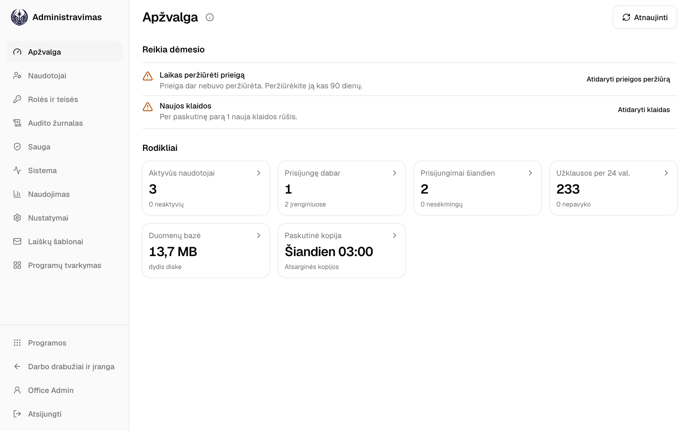
15Naudotojai
Tik administratoriams
- Kurkite, redaguokite ar deaktyvuokite paskyras. Kiekvienai paskyrai priskirkite vieną ar kelias roles: naudotojas gali tai, ką leidžia bet kuri jo rolė. Ką leidžia kiekviena rolė, rodo Rolės ir teisės.
- Rolės pakeitimas naudotoją pasiekia per kelias minutes, nereikia jungtis iš naujo. Deaktyvuotas naudotojas atjungiamas visuose įrenginiuose.
- Slaptažodžiui atkurti naudokite ⋯ → Nustatyti naują slaptažodį….
- Negalite deaktyvuoti savo paskyros ar atimti iš savęs rolės, kuri leidžia tvarkyti naudotojus ar roles. Rolę Administratorius visada turi bent vienas aktyvus naudotojas.
- Jei prisijungėte daugiau nei prieš 12 valandų, prieš išsaugant pakeitimą programėlė paprašys patvirtinti slaptažodį (Patvirtinkite slaptažodį).
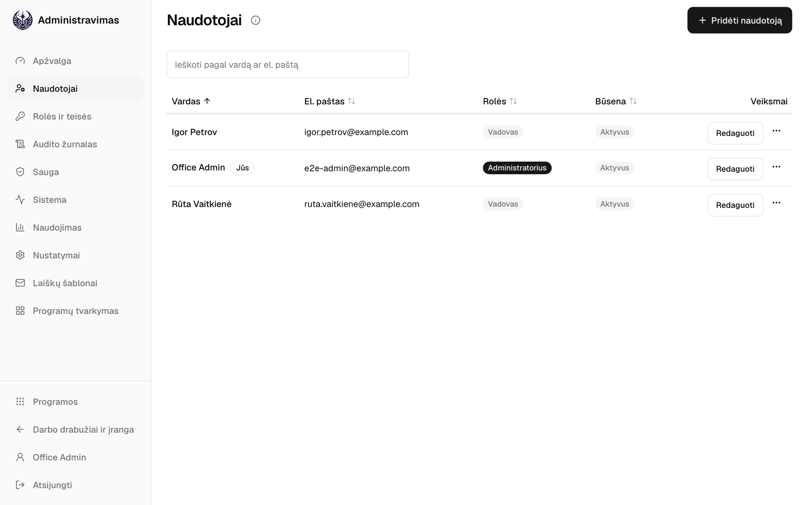
16Rolės ir teisės
Tik administratoriams
Rolės ir teisės rodo kiekvieną rolę, ką ji leidžia ir kiek naudotojų ją turi. Rolė – tai teisių rinkinys, pavyzdžiui, Tvarkyti prekių katalogą ar Trinti darbuotojus. Roles naudotojams skiriate skiltyje Naudotojai.
- Administratorius, Vadovas ir Darbuotojas yra įtaisytos rolės. Administratorius gali viską ir jo pakeisti negalima: Peržiūrėti parodo, ką jis leidžia. Ką leidžia Vadovas ir Darbuotojas, galite keisti, bet ne jų pavadinimus ar aprašymus, o ištrinti jų negalima.
- Pridėti rolę sukuria naują: pavadinimas, kam ji skirta, ir jos teisės. Kai kurioms teisėms reikia kitos, kuri pažymima kartu: teisei Tvarkyti naudotojus reikia teisės Matyti naudotojus.
- Pakeitimas rolę turinčius naudotojus pasiekia per kelias minutes.
- ⋯ → Ištrinti rolę… ištrina rolę, kurios neturi nė vienas naudotojas. Pirmiausia atimkite ją iš naudotojų skiltyje Naudotojai.
- Jei prisijungėte daugiau nei prieš 12 valandų, prieš išsaugant pakeitimą programėlė paprašys patvirtinti slaptažodį (Patvirtinkite slaptažodį).
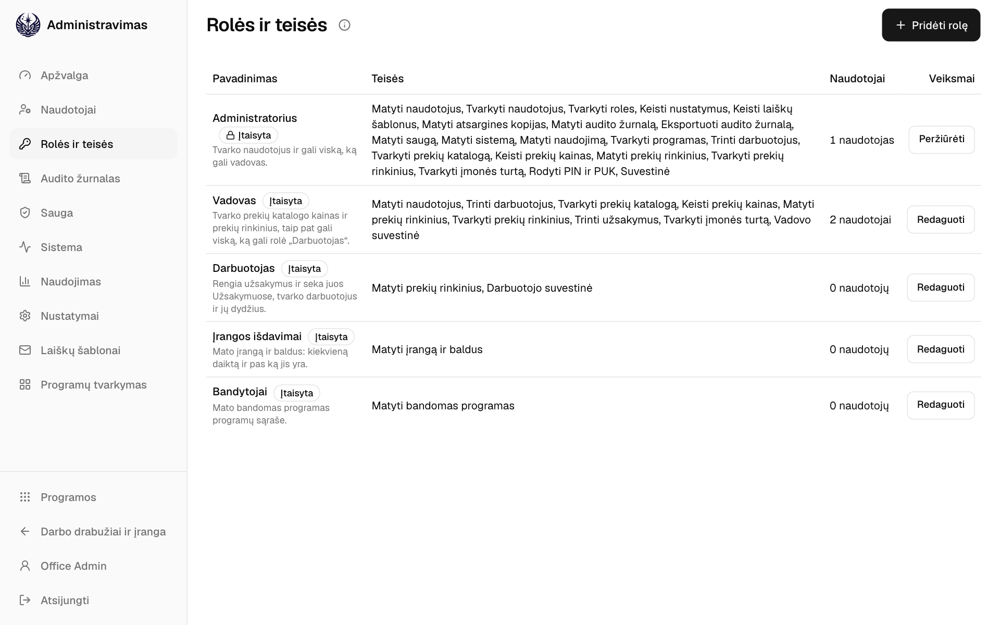
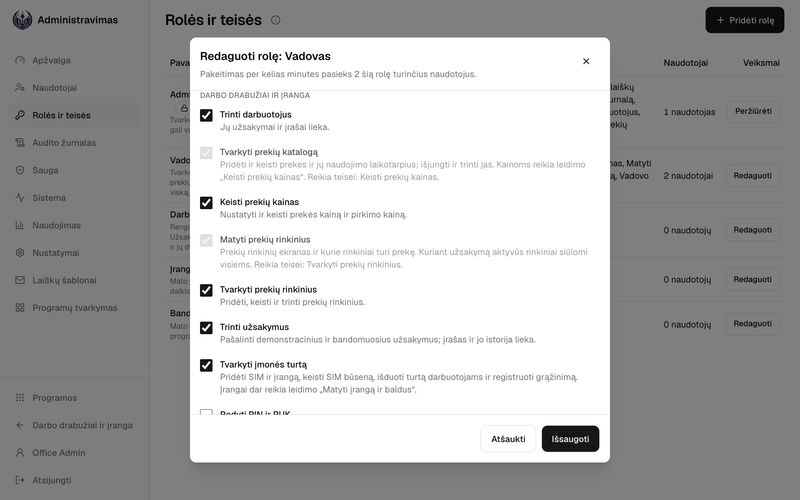
17Audito žurnalas
Tik administratoriams
Audito žurnalas rodo kiekvieną užfiksuotą pakeitimą: kas pakeista, kas pakeitė, kada ir kur. Pakeitimas daromas programoje Darbo drabužiai ir įranga, Administravime, per darbuotojo Patvirtinimo nuorodą arba pačios Sistemos.
Filtruokite pagal Sritis, Pakeitimas, Naudotojas ir datas. Spustelėkite pakeitimą, kad jis atsivertų šalia sąrašo. Jame matyti kiekvienas laukas prieš ir po, o Atidaryti programoje „Darbo drabužiai ir įranga“ atidaro įrašą. Visi šio įrašo pakeitimai susiaurina sąrašą iki jo.
- Antspaudai, viršuje: kiekvienos dienos pakeitimai užantspauduojami praėjus valandai po dienos pabaigos maiša, kuri apima ir ankstesnę dieną, todėl vėliau pakeistas, pridėtas ar pašalintas pakeitimas išryškėja. Patikrinti iš naujo patikrina visus antspaudus; programėlė juos tikrina ir kas valandą.
- Kiekvienam antspaudui suteikiama ir laiko žyma: viešoji laiko žymų tarnyba pasirašo antspaudą kartu su laiku. Vėliau iš naujo sudarytas antspaudas negali gauti pradinio laiko, todėl net turintis prieigą prie serverio negali nepastebimai perrašyti žurnalo. Skydelis rodo, iki kurios dienos antspaudams suteiktos laiko žymos.
- Jei užantspauduota diena nesutampa arba jos laiko žyma netinkama, pavėluota ar jos nėra, tai parodo Apžvalga. Praneškite serverį prižiūrinčiam asmeniui ir išsaugokite atsargines kopijas iš laiko prieš tą dieną.
- Eksportuoti (telefone – po ⋯) atsisiunčia filtrų atrinktus pakeitimus tarp dviejų dienų, ne ilgiau kaip per metus, kaip CSV, skaičiuoklei arba JSON eilutės, archyvui. Pats eksportas taip pat užfiksuojamas audito žurnale.
- Pakeitimai laikomi metų metus (10 metų, jei serveryje nenustatyta kitaip), paskui ištrinami po dieną.
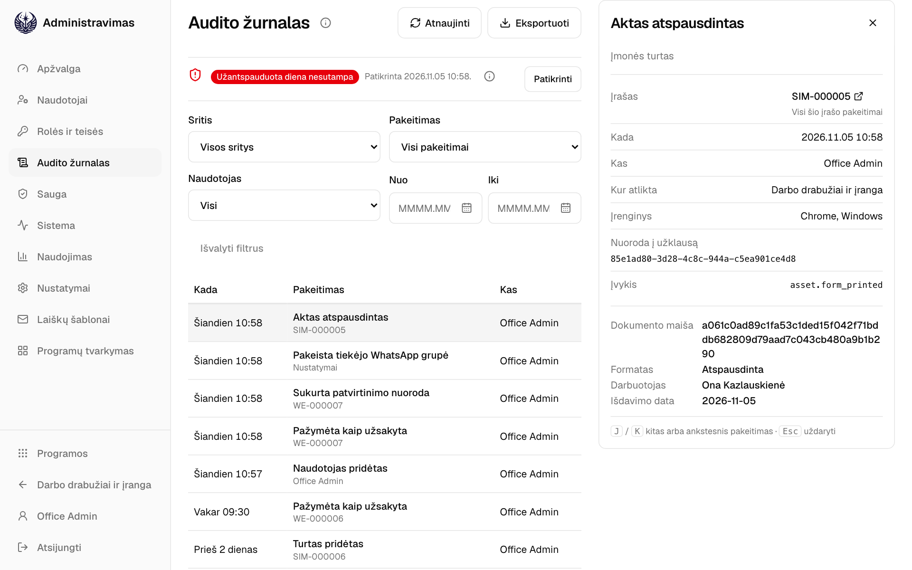
18Sauga
Tik administratoriams
Sauga turi tris skirtukus:
- Prisijungimai: kiekvienas prisijungimas, nepavykęs bandymas, patvirtintas slaptažodis ir atsijungimas su paskyra, adresu, iš kurio jungtasi, ir įrenginiu. Filtruokite pagal įvykį, naudotoją ir datas. Prie nepavykusio bandymo nurodyta priežastis, pvz., Neteisingas slaptažodis. Prisijungimų įrašai laikomi 180 dienų.
- Prisijungę įrenginiai: kiekviena naršyklė, kurioje kas nors šiuo metu prisijungęs. Mygtuku Atjungti atjunkite pamestą ar neatpažintą įrenginį: tas asmuo ten turės vėl prisijungti savo slaptažodžiu.
- Prieigos peržiūra: kiekvienas naudotojas su rolėmis, tuo, ką jos leidžia, ir paskutiniu prisijungimu. Administratoriai ir paskyros, nenaudotos 90 dienų, pažymėti. Patikrinkite, ar kiekvienam vis dar reikia jo prieigos, pakeiskite ją ekrane Naudotojai, tada pasirinkite Pažymėti kaip peržiūrėtą. Darykite tai kas 90 dienų: Apžvalga primins.
Nukopijuotas prisijungimas sustabdytas reiškia, kad kažkas panaudojo seną prisijungimo kopiją, todėl jis buvo nutrauktas visuose jį turėjusiuose įrenginiuose. Paklauskite naudotojo, ar tai buvo jis. Jei ne, tegul pasikeičia slaptažodį.
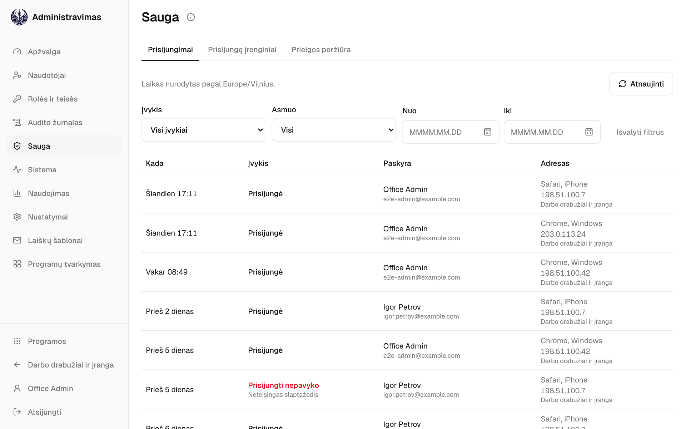
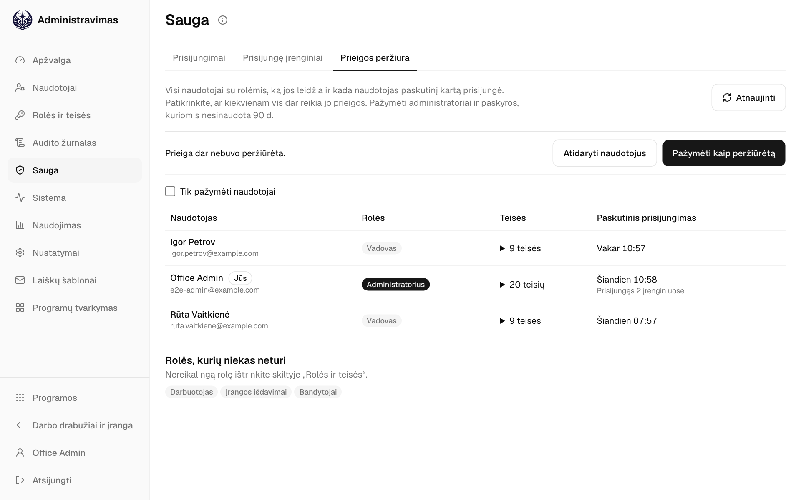
19Sistema
Tik administratoriams
Sistema rodo, kaip veikia programėlė. Ji turi tris skirtukus: Būsena, Klaidos ir Atsarginės kopijos.
- Būsena: ar programėlė Veikia, jos versija ir kada ji paleista; paskutinių 24 valandų užklausos, kiek jų nepavyko ir kiek jos truko; duomenų bazės dydis ir paskutinė migracija; kiek laikomi prisijungimai, klaidos ir pakeitimai.
- Klaidos: kas nepavyko serveryje ar kieno nors naršyklėje, kiek kartų ir kada paskutinį kartą. Atidarykite klaidą, kad matytumėte, kas su ja susidūrė, kur ir kokiu įrenginiu. Klaidos laikomos 30 dienų.
- Atsarginės kopijos: žr. toliau.
Kai kas nors nepavyksta, programėlė parodo Nuoroda į užklausą, pvz., 9f2c1a7e. Klaida ekrane Klaidos rodo tą pačią nuorodą. Perduokite ją serverį prižiūrinčiam asmeniui: pagal ją jis randa klaidą serverio žurnale.
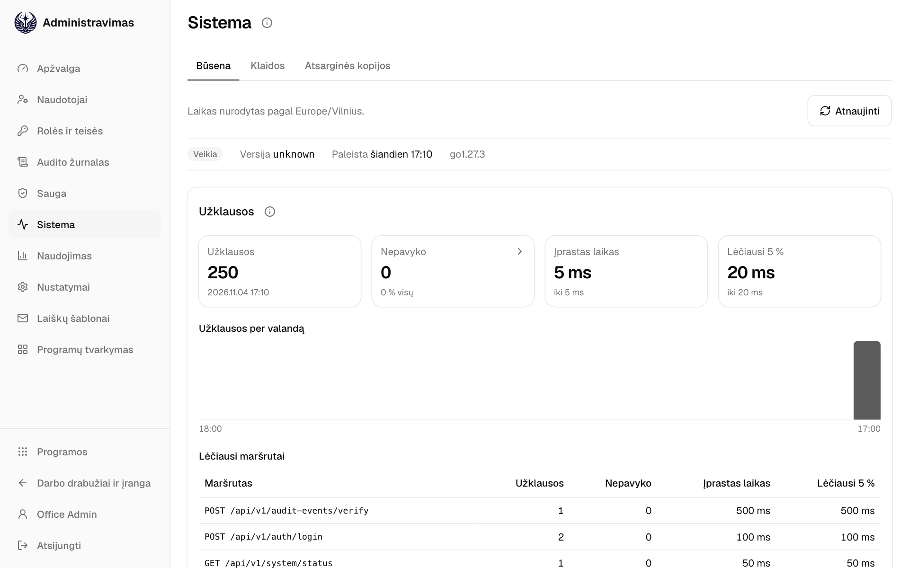
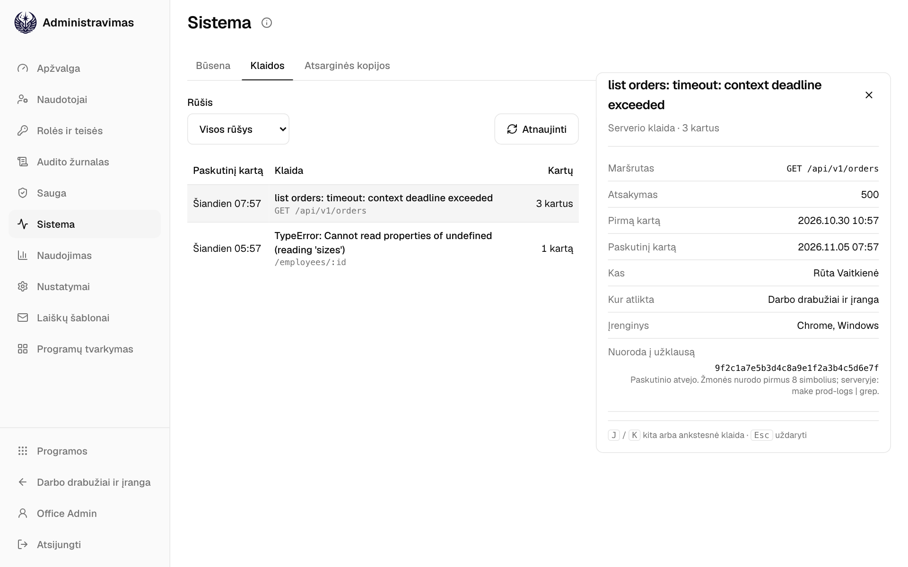
20Atsarginės kopijos
Tik administratoriams
Sistema → Atsarginės kopijos rodo, ar duomenų bazė kopijuojama. Atsarginių kopijų tarnyba serveryje pagal tvarkaraštį kopijuoja visą duomenų bazę, jei nenustatyta kitaip, kiekvieną naktį, ir ištrina senas kopijas pasibaigus laikymo laikui.
Viršutinė eilutė sako, ar viskas gerai. Ji tampa raudona, kai paskutinė kopija nepavyko, kai suplanuota kopija vėluoja arba kai tarnyba nustojo pranešti. Praneškite serverį prižiūrinčiam žmogui.
Antras įspėjimas rodomas, kol kopijos laikomos tik pačiame serveryje, nes jos dingtų kartu su juo.
- Paskutinė kopija ir Kita kopija: kada, paskutinės dydis ir kiek ji užtruko.
- Laikoma ir Bendras dydis: dabar laikomos kopijos.
- Naujausios kopijos: kiekvienas bandymas, naujausi pirmi, nepavykusio – su klaida.
- Nustatymai: tvarkaraštis, kur kopijos saugomos, kiek laiko laikomos ir ar užšifruotos.
Nustatymai keičiami serveryje, ten ir atkuriama kopija: programėlė juos tik rodo.
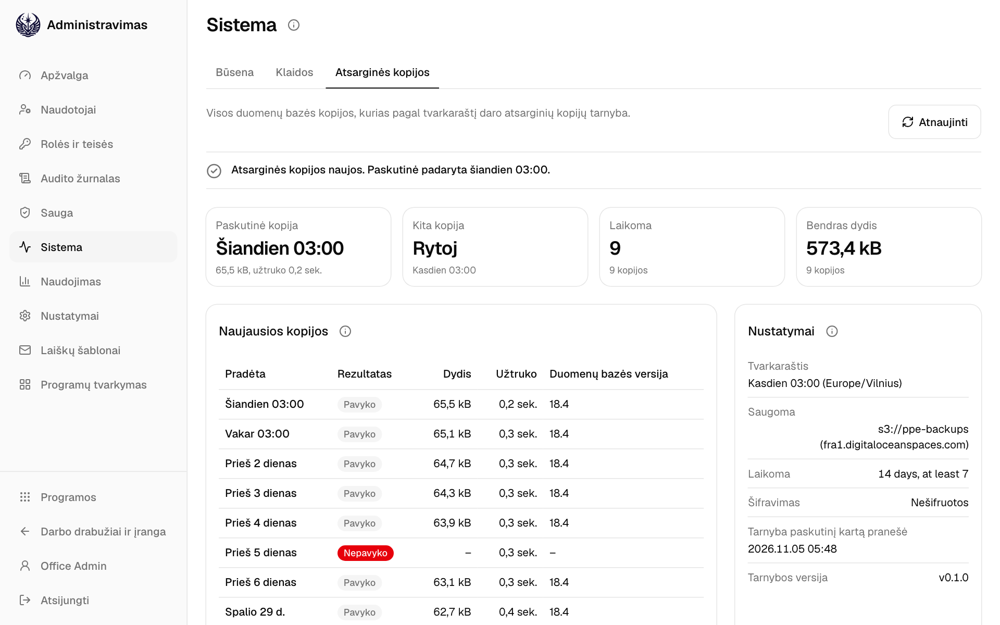
21Naudojimas
Tik administratoriams
Naudojimas rodo, kaip naudojamasi programėlėmis. Jokie puslapiai nesekami: viskas gaunama iš to, ką programėlė ir taip užfiksuoja.
- Viršuje: šiandien, per paskutines 7 ir per 30 dienų aktyvūs asmenys iš visų aktyvių paskyrų ir šiandienos prisijungimai.
- Aktyvūs asmenys per dieną pagal programėlę, su linija kiekvienai rolei. Prisijungimai per dieną, su nepavykusiais.
- Patvirtinimo nuorodos per 90 dienų: kiek nuorodų darbuotojams išsiųsta, atidaryta ir patvirtinta, kiek dar laukia, nebegalioja ar buvo pakeistos.
- Pakeitimai per savaitę pagal sritį (kuo tamsiau, tuo daugiau) ir daugiausia pakeitimų atlikę asmenys.
- Įrenginiai per 30 dienų ir Kalbos: telefonai, planšetės ir kompiuteriai su jų sistemomis ir naršyklėmis, naudotojų ir darbuotojų kalbos.
- Duomenų kokybė per 90 dienų: darbuotojai be dydžių ir prekės be kainos ar naudojimo laikotarpio. Kuo mažiau, tuo geriau.
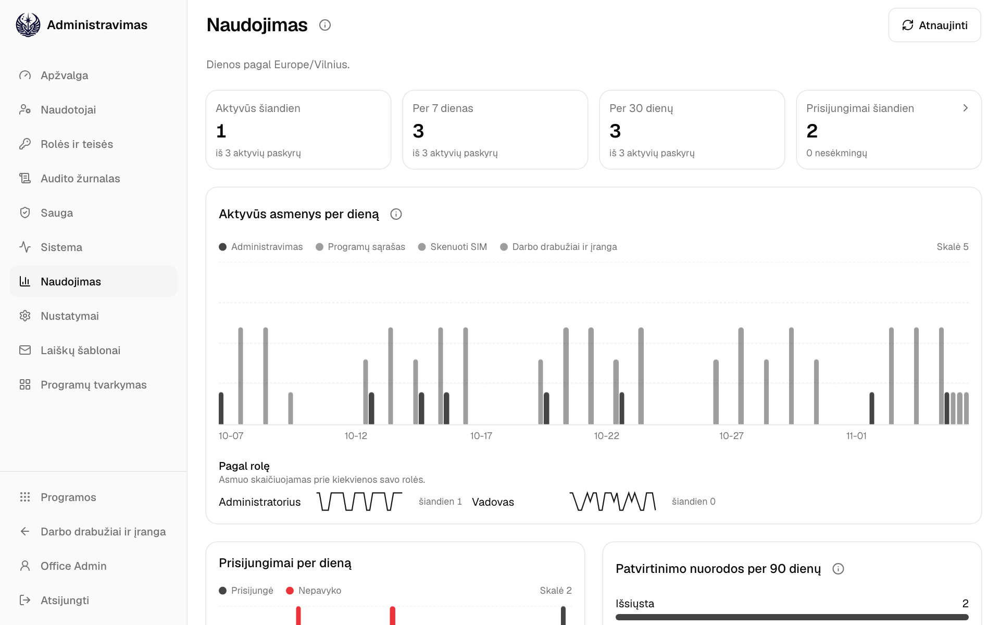
22Nustatymai
Tik administratoriams
Tiekėjo WhatsApp grupė: įrašykite grupės pavadinimą ir pakvietimo nuorodą. WhatsApp programėlėje atidarykite grupę, palieskite jos pavadinimą, tada Pakviesti per nuorodą ir Kopijuoti nuorodą.
Kopijuoti į WhatsApp tada pasiūlo atidaryti šią grupę, kur įklijuojate užsakymo žinutę. WhatsApp negali atidaryti grupės su jau įrašyta žinute. Pašalinti grupę grąžina WhatsApp atidarymą nepasirinkus pokalbio.
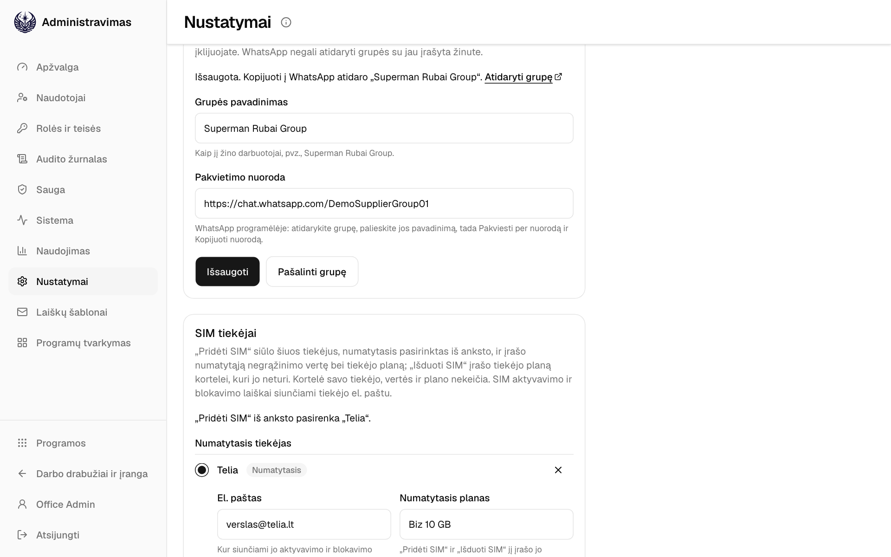
SIM tiekėjai: tiekėjai, kuriuos siūlo Pridėti SIM. Įrašykite pavadinimą ir pasirinkite Pridėti. Vieną pažymėkite kaip Numatytasis tiekėjas (jį „Pridėti SIM“ pasirenka iš anksto) arba pasirinkite Be numatytojo; kryželis šalia pavadinimo jį pašalina. Numatytoji negrąžinimo vertė (€) – suma, kurią „Pridėti SIM“ įrašo naujai kortelei, pavyzdžiui, 25,00; palikite tuščią, jei jos nėra. Niekas nepasikeičia, kol nepasirenkate Išsaugoti.
Jau užregistruota kortelė savo tiekėjo nekeičia, net jei jį pašalinate iš sąrašo, kaip ir savo negrąžinimo vertės.
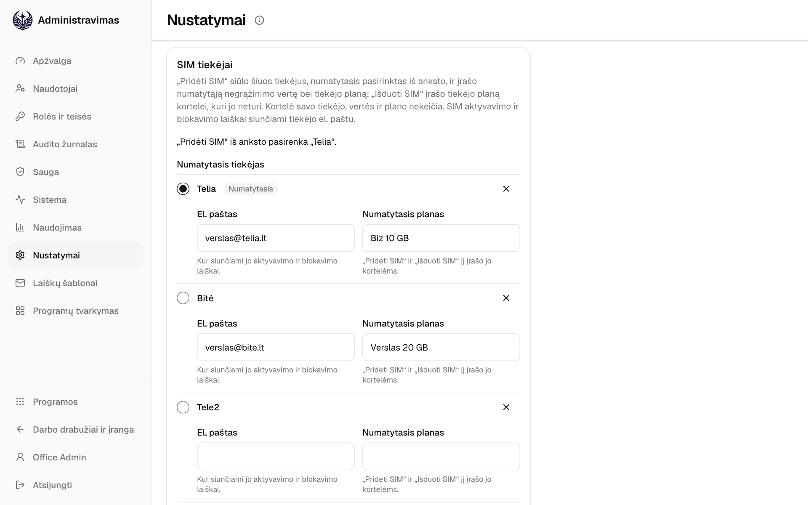
23Programų tvarkymas
Tik administratoriams
Programų tvarkymas Administravime – tai programų sąrašo plytelės: kiekviena programa ir nuoroda, sąrašo tvarka. Pasirinkite vieną, kad pamatytumėte, kur ji veikia, kas ją mato, atsiliepimus ir Pakeitimai.
Registruoti programą prideda plytelę: jos pavadinimą kiekviena kalba, trumpąjį vardą (jos vardas adresuose ir įrašuose, nustatomas vieną kartą), ar tai programa, ar nuoroda į vieną programos ekraną, grupę, etapą, paveikslėlį ir spalvą, ir kur ji veikia: Šioje svetainėje, su keliu, pvz., /orders/new, ar Kitoje svetainėje, su jos https adresu. Redaguoti pakeičia vėliau.
Kas mato: Visi prisijungę arba turintys bet kurį pažymėtą leidimą. Plytelės matymas niekam neleidžia daugiau: ką jie gali daryti programoje, vis tiek lemia jų rolės. Prototipas ir Kuriama rodomi tik bandytojams; Nebenaudojama paslepia plytelę nuo visų ir išsaugo jos įrašus.
Perkelti aukščiau ir Perkelti žemiau keičia jos vietą sąraše. Atsiliepimai rodo, ką žmonės atsiuntė iš jos plytelės, naujausius pirmus.
Versijos ir kanalai programai, skelbiamai versijomis, pvz., „Skenuoti SIM“, rodo jos versijas, naujausias pirmas, ir kurią atidaro kiekvienas kanalas: Stabili – visiems, kurie mato programą, Beta ir Peržiūra – bandytojams. Kiekvienas diegimas paskelbia naują versiją kanale Peržiūra. Kad ją gautų visi, pasirinkite ⋯ šalia jos, tada Padaryti: Stabili; norėdami grąžinti ankstesnę, pasirinkite Padaryti: Stabili ant senesnės. Padaryti: Beta pasiūlo versiją bandytojams, kol ji netapo stabili. Kai peržiūroje yra naujesnė versija nei stabili, tai parašoma.
Programai, kurios niekas nebando pirma, įjunkite Stabili seka diegimus: tada kiekvieno diegimo versija visiems tampa ir stabilia. Bandymai pateikia versijas greta: kiekvienos – kas ja naudojosi per paskutines 30 dienų, paskutinį kartą joje matytas klaidas ir iš jos atsiųstus atsiliepimus, kad matytumėte, ar Beta ar Peržiūros versija jau tinka visiems.
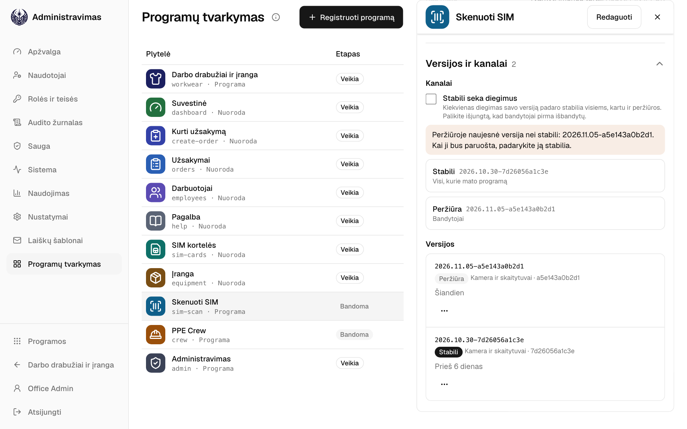
24Jūsų paskyra
- Kalba: English, Lietuvių arba Русский. Pasirinkimas išsaugomas jūsų paskyroje, todėl galioja kiekviename įrenginyje, kuriame prisijungiate. Darbuotojo patvirtinimo puslapis ir įrašas lieka anglų ir rusų kalbomis. Datos rašomos pagal kalbą: 2026-10-15 anglų, 2026.10.15 lietuvių, 15.10.2026 rusų kalba.
- Tema: Šviesi, Tamsi arba Kaip įrenginyje. Ji išsaugoma šiame įrenginyje ir galioja ir prisijungimo puslapyje.
- Keisti slaptažodį: kiti jūsų įrenginiai atjungiami, o šis lieka prisijungęs.
- Prisijungę įrenginiai: visos naršyklės, kuriose esate prisijungę, ir kada jos naudotos paskutinį kartą. Šis įrenginys – pirmas. Atjunkite įrenginį, kurio nebenaudojate ar neatpažįstate, arba pasirinkite Atjungti visus kitus įrenginius.
- Įdiegti programą: įtraukia programą į šio įrenginio pradžios ekraną arba paaiškina, kaip tai padaryti. Žr. Programos įdiegimas.
- Lentelės eilutės: Kompaktiškos ekrane sutalpina daugiau eilučių.
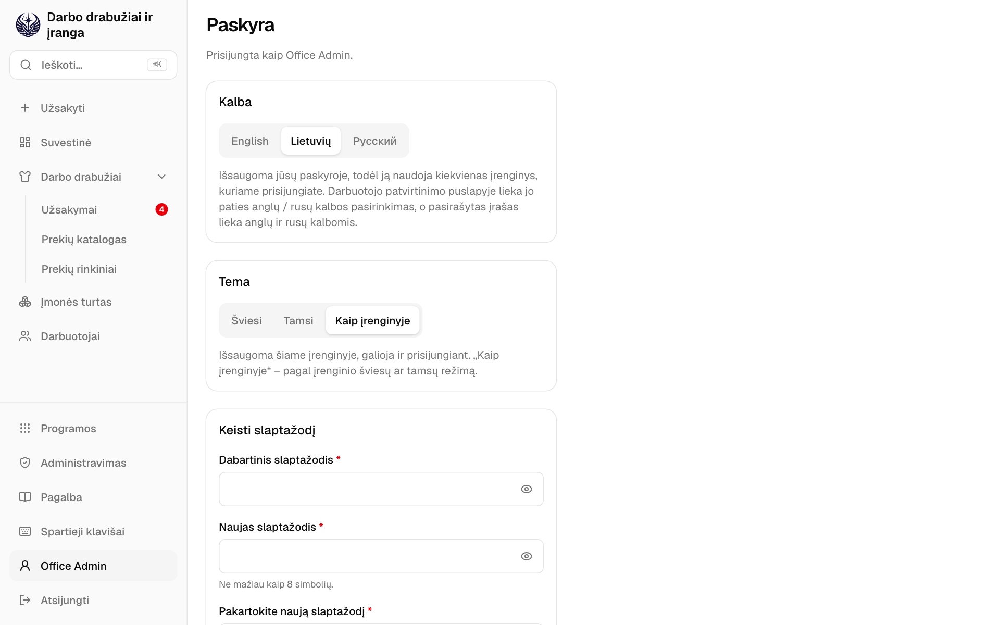
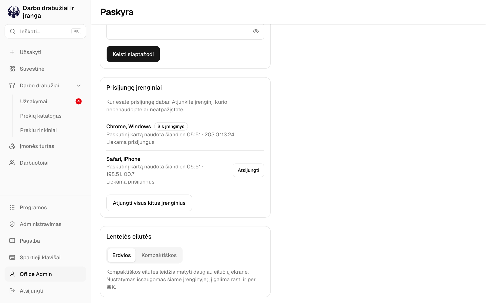
25Programos įdiegimas
Įtraukite programą į telefono pradžios ekraną ir atidarykite ją kaip bet kurią kitą: savo lange, be naršyklės adreso juostos, pavadinimu Workwear.
Android, naršyklėje Chrome:
- Atidarykite workwear.gavort.nl naršyklėje Chrome ir prisijunkite.
- Atidarykite savo paskyrą ir pasirinkite Įdiegti programą, tada Įdiegti. Jei Įdiegti programą nėra, atidarykite Chrome meniu ⋮ ir pasirinkite pridėjimą prie pradžios ekrano.
- Palaikykite paspaudę piktogramą Workwear: atsiras Užsakyti, Užsakymai, Darbuotojai ir Programos.
iPhone arba iPad, naršyklėje Safari:
- Atidarykite workwear.gavort.nl naršyklėje Safari.
- Bakstelėkite Bendrinti (kvadratas su rodykle į viršų), tada Pridėti prie pradžios ekrano, tada Pridėti.
- Atidarykite Workwear iš pradžios ekrano ir prisijunkite dar kartą: ten programa turi savo prisijungimą, atskirą nuo Safari. Pažymėkite Likti prisijungus, kitaip programa gali prašyti prisijungti kiekvieną kartą, kai ją uždarote.
Kompiuteryje ją taip pat galima įdiegti naršyklėmis Chrome ir Edge: paskyroje pasirinkite Įdiegti programą. Atidarius iš pradžios ekrano, paskyroje parašyta Naudojate programą iš pradžios ekrano.
- Kai paruošta nauja programos versija, apačioje pasirodo pranešimas Paruošta nauja programos versija. Užbaikite tai, ką rašote, tada pasirinkite Įkelti iš naujo.
- Be ryšio programa rodo Nepavyksta pasiekti serverio. Ryšiui atsiradus, ji pati vėl atidaro puslapį, arba pasirinkite Bandyti dar kartą.
- Piktogramos nuorodos yra ta kalba, kurią naudojote pridėdami programą. Pakeitę kalbą, pašalinkite programą iš pradžios ekrano ir pridėkite iš naujo.
26Paieška ir spartieji klavišai
| Klavišas | Ką daro |
|---|---|
| ⌘K / Ctrl K | Ieško įrašų numerių, darbuotojų, prekių, įmonės turto ir ekranų. Pavyzdžiui, įveskite vardą ir pasirinkite Naujas užsakymas: …. |
| / | Pereina į paieškos arba „Pridėti prekę“ lauką. |
| G, tada D O H E A C S U | Pereina į Suvestinę, Kurti užsakymą, Užsakymus, Darbuotojus, Įmonės turtą, Katalogą, Prekių rinkinius arba Naudotojus (Administravime). |
| J / K, Esc | Pereina per Užsakymus, SIM korteles, Įrangą ar Prekių katalogą arba uždaro atidarytą įrašą. |
| ⌘/Ctrl Enter | Ekrane „Kurti užsakymą“ atidaro užsakymo peržiūrą. |
| ? | Rodo visus sparčiuosius klavišus. |
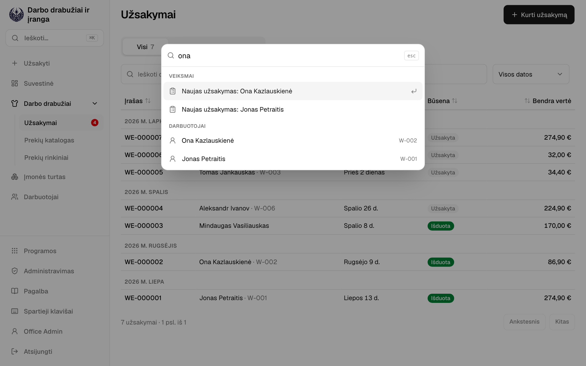